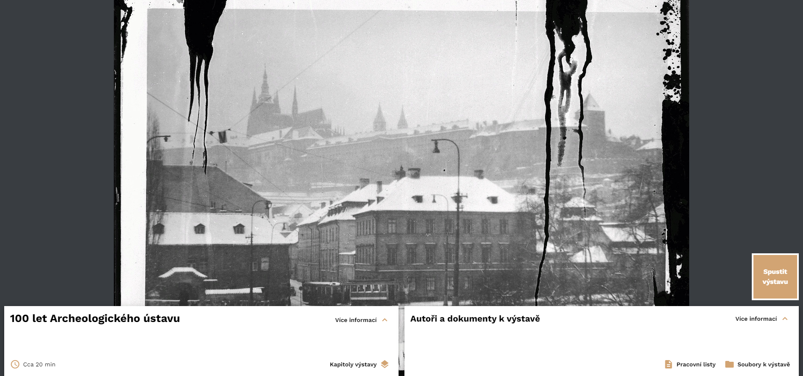

TODO promovideo
O nástroji INDIHU Exhibition#
Editor virtuálních výstav INDIHU Exhibition je vhodný pro tvorbu multimediálních bohatých prezentací s interaktivními prvky. Je ideální pro neotřelé představení svojí práce s cílem vzbudit v návštěvnících zájem. Už není tak ideální pro přenos velkého množství informací. Delší materiály lze však přiložit a návštěvníci si je mohou v případě zájmu stáhnout. Editor byl koncipován tak, aby byla výsledná virtuální výstava vizuální, svěží, nápaditá a zábavná. INDIHU Exhibition umožňuje jednotlivcům nebo týmům vytváření virtuálních výstav na zcela libovolná témata. Má širokou škálu použití pro instituce zprostředkovávající kulturní dědictví a lze použít i pro neotřelou online prezentaci výstupů vědeckého bádání. Může sloužit jako nástroj pro žáky a studenty, kteří v něm mohou zpracovávat školní práce. Online přítomnost se stává nezbytností, protože veřejnost očekává, že budete online nabízet zajímavý obsah.
Proč používat INDIHU Exhibition?
- Umožní tvořit virtuální výstavy, aniž byste museli rozumět webdesignu
- Poskytuje širokou škálu obsahu od obrázků, přes video, texty
- Nabízí zařazení interaktivních her
- Dovoluje soustředit se na obsah a ne na technickou stránku
- Ušetří Vám peníze za programátory
- Splňuje současné standardy uživatelských rozhraní - jednoduché ovládání a střízlivé rozhraní s akcentem na vizuálně atraktivní obsah.
INDIHU Exhibition je open source (free) software s otevřeným zdrojovým kódem. Kdokoli si může software "rozběhnout" na vlastní infrastruktuře a upravit si ho tak, jak potřebuje. Výstavu pak vytváříte v e svém webovém prohlížeči na adrese a webová služba dostupná na adrese https://exhibition.indihu.cz/, kterou provozuje Knihovna Akademie věd ČR.
Co to umí#
- Obrázky (animace, různé přechody, před a po, fotogalerie)
- Infopointy (stručné informační boxy v obrázcích)
- Video
- Text
- Audio (hudba, audio komentáře)
- Vkládání externího obsahu (např. mapy, videa, grafy, 3D objekty)
- Hry (Kvíz, Najdi na obrázku, Stírací los, Hádej velikost apod.)
- Přikládání souborů s dalšími materiály (např. seznam literatury, pracovní listy pro školy)
- Na tvorbě výstavy můžete spolupracovat s více tvůrci
- Hostování výstavy
- Snadné sdílení návštěvníkům i spoluatorům
Jak začít?#
Tvorba virtuálních výstav má dvě části - příparava obsahu a samotná práce v editoru. Nepodceňte přípravu obsahu. V osvojení nástroje doporučujeme postupovat takto:
- Nejprve je třeba vybrat téma a obsah připravit tak, aby byl vhodný pro zpracování formou virtuální výstavy. Inspirujte se jinými tvůrci.
- Základní fungování: Vysvětlení používaných pojmů a ilustrovaný popis jednotlivých kroků při založení první výstavy
- Obrazovky: Podrobný ilustrovaný popis jednotlivých typů obrazovek
- Hry: Podrobný ilustrovaný popis jednotlivých interaktivních her
Jak výstavu vidí návštěvník#
Na úvodní stránce najde návštěvník klíčové informace o virtuální výstavě - její přibližnou délku, jednotlivé kapitoly, autory a v případě, že je autor vytvořil, tak i doplňující dokumenty k výstavě.

Infoprohlídka#
Jakmile návštěvník zahájí výstavu tlačítkem "Spustit výstavu," automaticky se otevře infoprohlídka, která návštěvníka postupně provede ovládacími prvky výstavy včetně užitečných klávesových zkratek, jako je posun ve výstavě šipkami nebo pauza a opětovné spuštění výstavy mezerníkem. Návštěvník ji může přeskočit stlačením tlačítka Přeskočit prohlídku.

Průchod výstavou#
Výstava je tvůrcem načasovaná a poběží návštěvníkovi v prohlížeči sama od sebe kapitolu po kapitole. Druhým typem je pak výstava, která takové načasování nemá a její ovládání je zcela na návštěvníkovi a jeho tempu. V každém případě je však vždy možné výstavu pozastavit nebo se k jednotlivým obrazovkám vrátit.
Typy obrazovek#
Virtuální výstavy Indihu Exhibition mají mnoho druhů obrazovek, které se dají obecně zařadit tří typů - obsahové, herní a interaktivní. [Obsahové obrazovky](obrazovky.md/#obsahove-obrazovky jsou do velké míry statické a není v nich zapotřebí taková míra uživatelské aktivity jako ve zbylých dvou. Hry a interaktivní obrazovky slouží k aktivizaci návštěvníka, v žádném případě však není jejich vyplnění povinné a dají se přeskočit.